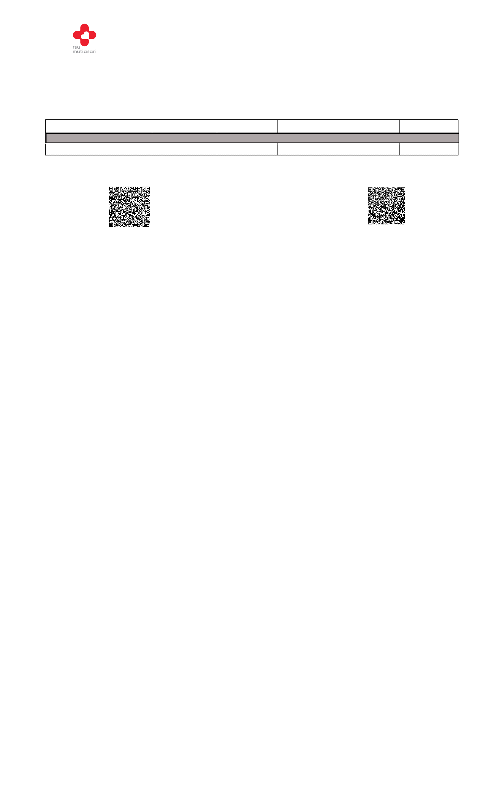

RSU MUTIASARI
Bathin Betuah NO. 1 - A Jln Kebun Karet, DURI, RIAU
TELP 0756 936 35 E-mail : rsu.mutiasari@gmail.com -
HASIL PEMERIKSAAN LABORATORIUM
Poliklinik Mata
BPJS
No.RM
Nama Pasien
JK/Umur
Lahir
: 091356
: ASRIL.D
:L
/ 59 Th 2 Bl 4 Hr
: 1965-05-25
Alamat
No.Periksa
Dokter Pengirim
Pemeriksaan
KKIMIMIAIAKLKINLIKNIK
b.gula darah sewaktu
Hasil
574
Satuan
mg/dl
Catatan : Jika ada keragu-raguan pemeriksaan, diharapkan segera menghubungi laboratorium.
Penanggung Jawab
: JL ROKAN, -, -, -
: 2024/07/29/000158
: dr Amanda Priska Diananti Sp M
Nilai Rujukan
< 200
Keterangan
***
Tgl.Cetak : 23/08/2024 09.54.40
Petugas Laboratorium
dr. Taufik Abdi, Sp. P. K
Cindy Rahmadany
1. UU ITE No. 11 Tahun 2008 Pasal 5 Ayat 1
"Informasi Elektronik dan/atau Dokumen Elektronik dan/atau hasil cetaknya merupakan alat bukti hukum yang sah"
2. Dokumen ini telah ditandatangani secara elektronik menggunakan Sertifikat Elektronik yang di terbitkan PT.Tilaka Nusa Teknologi
3. Dokumen ini dapat dibuktikan keasliannya dengan melakukan scan barcode dan informasi akan ditampilkan dalam browser